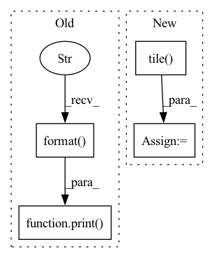

Pattern ID :9860
Before Change
os.chdir("../") // back to the original directory
print( "Loss: {:.3f}, PESQ: {:.3f}".format( test_loss, test_pesq))
print("Evaluation of PESQ returns error {} times.".format(n_pesq_error))
class AnchoredAttractorTrainer(AttractorTrainer):
def __init__(self, model, loader, criterion, optimizer, args):After Change
sources = torch.istft(sources, n_fft=self.fft_size, hop_length=self.hop_size, normalized=self.normalize, window=self.window, length=T) // -> (n_sources, T)
estimated_sources = torch.istft(estimated_sources, n_fft=self.fft_size, hop_length=self.hop_size, normalized=self.normalize, window=self.window, length=T) // -> (n_sources, T)
repeated_mixture = torch.tile( mixture, (self.n_sources, 1))
result_estimated = bss_eval_sources(
reference_sources=sources.numpy(),
estimated_sources=estimated_sources.numpy()
)In pattern: SUPERPATTERN
Frequency: 3
Non-data size: 4
Instances Fragment ID: 35344331
Project Name: tky823/dnn-based_source_separation
Commit Name: df9cdaaad920a180e767526b968ade8b822355f2
Time: 2021-08-09
Author: 40362510+tky823@users.noreply.github.com
File Name: egs/wsj0-mix/common/src/driver.py
M Class Name: AttractorTester
N Class Name: AttractorTester
M Method Name: run(1)
N Method Name: run(1)
M Parent Class: TesterBase
N Parent Class: TesterBase
M File Name: egs/wsj0-mix/common/src/driver.py
N File Name: egs/wsj0-mix/common/src/driver.py
M Start Line: 564
M End Line: 683
N Start Line: 562
N End Line: 706
Before Change
test_loss_improvement /= n_test
test_pesq /= n_test
print( "Loss: {:.3f}, loss improvement: {:3f}, PESQ: {:.3f}".format( test_loss, test_loss_improvement, test_pesq))
class AttractorTrainer(Trainer):
def __init__(self, model, loader, criterion, optimizer, args):
self.train_loader, self.valid_loader = loader["train"], loader["valid"]After Change
perm_idx = perm_idx[0] // -> (n_sources,)
segment_IDs = segment_IDs[0] // -> (n_sources,)
repeated_mixture = np.tile( mixture, reps=(self.n_sources, 1))
result_estimated = bss_eval_sources(
reference_sources=sources,
estimated_sources=estimated_sources
) Fragment ID: 35344330
Project Name: tky823/dnn-based_source_separation
Commit Name: db6ae4406ffc1e5f0b6e7a5930544a09ba8b5106
Time: 2021-01-15
Author: 40362510+tky823@users.noreply.github.com
File Name: egs/librispeech/common/src/driver.py
M Class Name: Tester
N Class Name: Tester
M Method Name: run(1)
N Method Name: run(1)
M Parent Class:
N Parent Class:
M File Name: egs/librispeech/common/src/driver.py
N File Name: egs/librispeech/common/src/driver.py
M Start Line: 245
M End Line: 328
N Start Line: 246
N End Line: 354
Before Change
test_loss_improvement /= n_test
test_pesq /= n_test
print( "Loss: {:.3f}, loss improvement: {:3f}, PESQ: {:.3f}".format( test_loss, test_loss_improvement, test_pesq))
class AttractorTrainer(Trainer):
def __init__(self, model, loader, criterion, optimizer, args):
self.train_loader, self.valid_loader = loader["train"], loader["valid"]After Change
perm_idx = perm_idx[0] // -> (n_sources,)
segment_IDs = segment_IDs[0] // -> <str>
repeated_mixture = np.tile( mixture, reps=(self.n_sources, 1))
result_estimated = bss_eval_sources(
reference_sources=sources,
estimated_sources=estimated_sources
) Fragment ID: 35344328
Project Name: tky823/dnn-based_source_separation
Commit Name: 82aafe87b019c0358712296c8b8b3da8a296d1ba
Time: 2021-01-15
Author: 40362510+tky823@users.noreply.github.com
File Name: egs/wsj0-mix/common/src/driver.py
M Class Name: Tester
N Class Name: Tester
M Method Name: run(1)
N Method Name: run(1)
M Parent Class:
N Parent Class:
M File Name: egs/wsj0-mix/common/src/driver.py
N File Name: egs/wsj0-mix/common/src/driver.py
M Start Line: 252
M End Line: 336
N Start Line: 253
N End Line: 360